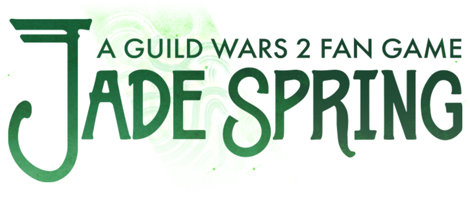
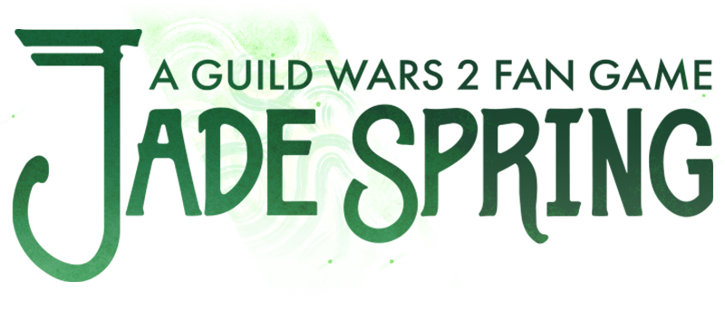
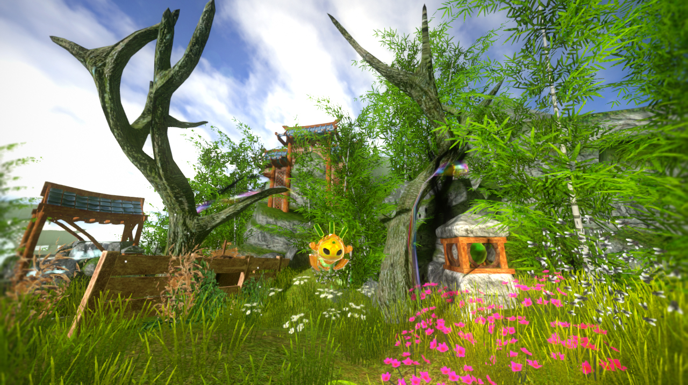

DRAFT
 

Clear Dragonvoid blights, pick weeds, and utilise your jade bot technologies to decorate a house and garden in this tiny, cozy Guild Wars 2 fan game, set in the vibrant landscape of Seitung Province!
Nayos was not easy on us; the force of that Kryptis turret’s blast left my plating cracked and my servos crushed and fragmented. Repair and recovery will be a slow process and, as grateful as I am for my jade technicians, it pains me to be away from the Commander for so long. Though perhaps, as I rehabilitate, I too can help build something meaningful.
Heyo, Alec here with some quick notes on developing Seitung Spring Clean ! This is a little fan game I’ve been working on to expose myself to the entirety of the game development cycle (and also because Guild Wars 2 – and Cantha in particular – is very special to me). I’ve touched on many aspects of development that really excite me, and so I’d like to write a little bit about them and where I’m at with fitting everything together. This will be a mix of a progress log and some personal aspirations, so thank you so much for taking a look!
The design brief for the game is a simple one: GW2 homesteads meets House Flipper, set in the verdancy of an End of Dragons-inspired map. I am trying to keep its scope very small but to think in a modular, systems-driven way which could technically facilitate enhancements and expansion in the future! The truth is that my interests lie much more in environment art and music than in engineering, but the reward of having a system to drop all of that art in is quite satisfying.
Notice as specified by ArenaNet’s content terms of use: © ArenaNet LLC. All rights reserved. NCSOFT, ArenaNet, Guild Wars, Guild Wars 2, GW2, Guild Wars 2: Heart of Thorns, Guild Wars 2: Path of Fire, Guild Wars 2: End of Dragons, and Guild Wars 2: Secrets of the Obscure and all associated logos, designs, and composite marks are trademarks or registered trademarks of NCSOFT Corporation.